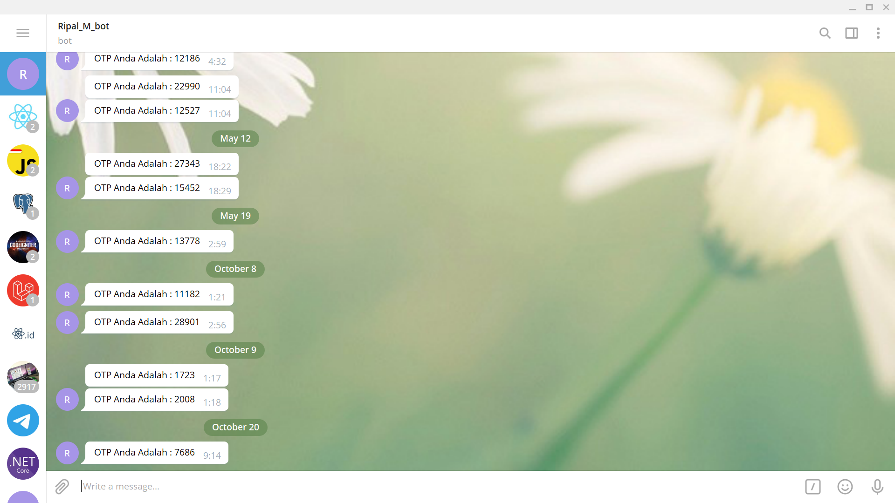

Web Inventory
Pada sisi tampilan, aplikasi ini menggunakan template bernama SBadmin2. SBadmin2 merupakan salah satu template admin yang bersifat open source serta memiliki ciri khas berupa tampilan user interface yang flat dan responsive tentunya karena dibuat menggunakan framework css bootstrap dan juga jQgrid. Aplikasi Inventory ini merupakan sebuah aplikasi berbasis web yang digunakan untuk melakukan pengelolaan dan kontrol terhadap stok barang yang ada. Sehingga penggunaan aplikasi Inventory berbasis codeigniter ini dapat menjadikan aktivitas pengelolaan dan manajemen stok terhadap barang.
Berikut beberapa fitur yang ada pada aplikasi Inventory yang dibuat dengan menggunakan framework codeigniter ini :
1. Register
Saat register, kita harus membuat bot telegram terlebih dahulu untuk mendapatkan token API nya dari bot
2. Login
Saat login kita harus menginputkan username yang telah terdaftar untuk mengecek apakah username tersebut ada atau tidak ada. Kalau username ada maka akan mengirimkan kode otp ke telegram yang sudah terdaftar dengan username tersebut
3. Login with authentication (Telegram BOT)
Kita akan mendapatkan kode otp di telegram bot. Lalu melanjutkan login dengan otp yang sudah dikirim ke telegram
4. Manage Product
Kita bisa melakukan create, read, update, delete, dan search (CRUDS)
5. Manage Store
Kita bisa melakukan create, read, update, delete, dan search (CRUDS)
6. Manage Stock
Kita bisa melakukan create, read, update, delete, dan search (CRUDS)
7. Manage Account
Kita bisa melakukan create, read, update, delete, dan search (CRUDS)
Mungkin segitu yang bisa saya jabarkan untuk aplikasi Inventory ini, untuk mendownload source code nya ada link di bawah. Terimakasih.